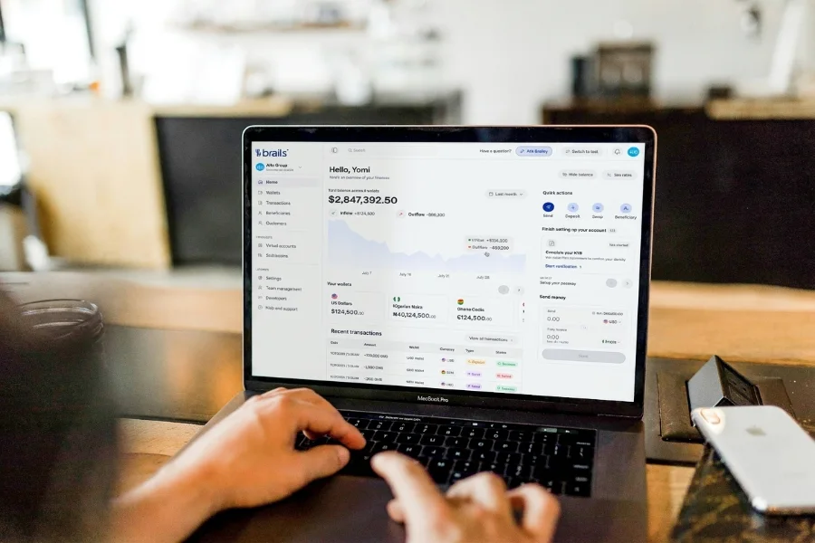

All articles
Every guide, product update and explainer we’ve published, newest first.
7 articles
November 2026 1
October 2026 4
GuidesHow to pay a supplier in China from NigeriaWhat you need before you send: invoice, supplier details and a locked rate.
2 min read
GuidesWhat a locked exchange rate actually meansThe difference between an indicative rate and the one your supplier receives.
2 min read
ProductSave a supplier once, pay them for yearsWhy saved beneficiaries cut payment errors and speed up repeat payments.
2 min read

ComplianceKYB explained: what we ask for and whyWhat business verification involves and how to get through it faster. 2 min readSeptember 2026 2
No articles found
Try another word, or .
The Brails newsletter
Get new articles
by email.
Guides, product news and stories from businesses paying across borders. One email when something new is published.
- Product updates
- Corridor guides
- Customer stories
Unsubscribe anytime. We never share your email.